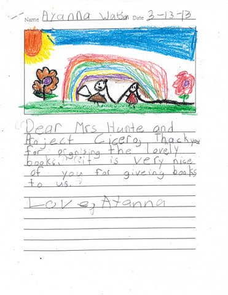
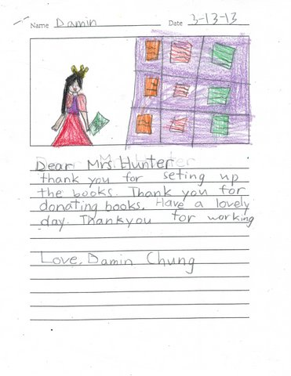
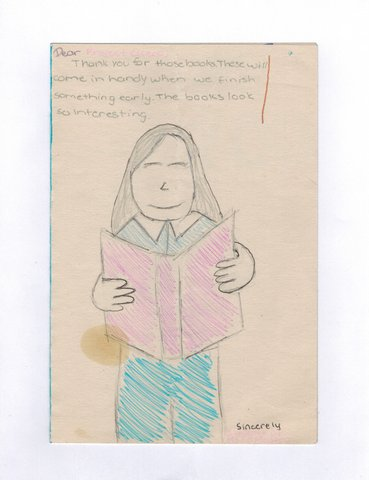
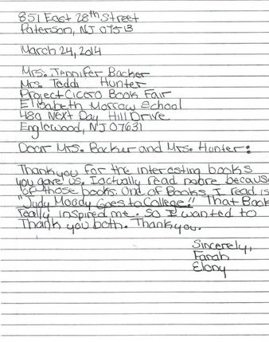
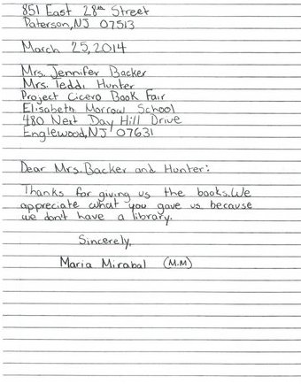
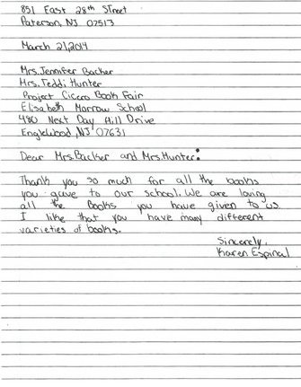
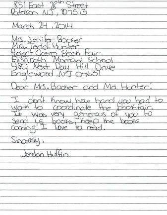

IMPACT
Since its inception in 2013, Project Cicero NNJ estimates distributing over 200,000 books to NJ schools. Teachers can create different lessons around the selected books and use the books both as tools for struggling readers and as incentives to help boost literacy skills. Teachers have said that Project Cicero NNJ books have increased their students’ enjoyment of reading, introduced their students to new subject matter, and improved their students’ reading level and/or skills.
Donor schools have student leaders who publicize and organize their individual school’s collection. That’s one of the greatest things about Project Cicero NNJ- kids helping other kids. Project Cicero NNJ shows teachers and students from different communities that we are all responsible for one another. A small effort- such as donating a well-loved book - collectively makes a huge impact for our community.
Donor schools have student leaders who publicize and organize their individual school’s collection. That’s one of the greatest things about Project Cicero NNJ- kids helping other kids. Project Cicero NNJ shows teachers and students from different communities that we are all responsible for one another. A small effort- such as donating a well-loved book - collectively makes a huge impact for our community.






